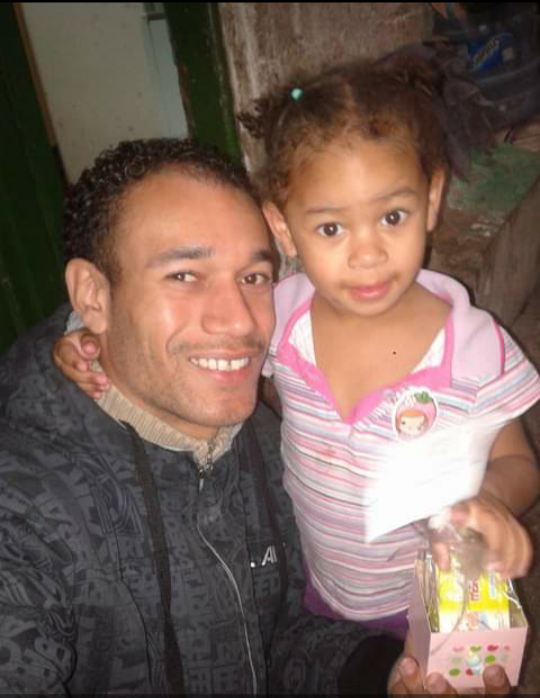

Olá, eu sou o Adriano
Quem sou eu ?
Olá, me chamo Adriano (ou Muriel prefiro assim para os amigos). Tenho 35 anos, Nasci e cresci em São Paulo no bairro do Capão Redondo. Meu sonho é ser um exelente programador. Ajudar minha família e conseguir um ótimo emprego. Também estou ancioso para trabalhar de casa e ter mais tempo para minha família e estudar mais ainda pra ganhar em dolar. Quero dar meu máximo no DevClub para logo conseguir um emprego como Programador.
Minhas metas até metade do ano que vem:
- Ajudar minha família
- Conseguir um emprego de respeito
- Conquistar minha Aventador(Esse só daqui uns anos)
- Ser valorizado no meu novo emprego
- Sempre fui apaixonado por computadores e como eles funcionam
- Minha mãe vai se orgulhar do que eu vou poder proporcionar para ela
Meu Linkedin
Pessoas que eu gostaria que estivesse no DevClub
- Papai Geraldo
- Mamãe Maria (que odeia ser chamada assim prefere Dora sem o acento no ó)
- Minha irmã Michelle
- E por fim meus irmãos Kleber e Caique que sempre pude contar com eles
